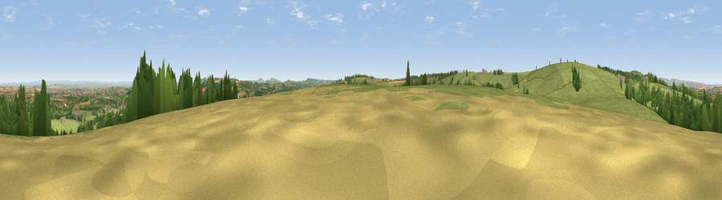

Viewpoint near Combe St Nicholas
#10671 in England · top 25% of its area beats it · near Combe St NicholasWhere it is
The exact computed spot (ST 30875 11925). Click the marker for map links.
The view, rendered

A 360° render of this exact spot computed from the terrain model, tree cover and land cover — summer colours, afternoon light, calibrated against photographs of famous viewpoints. Real trees, hedges and buildings will differ in detail.
The panorama
Grey silhouette: terrain skyline in each direction (720 bearings, Earth curvature and refraction included). Dashed green: skyline with trees (+15 m) and buildings (+8 m) as obstacles. Blue strip: how far the ground is visible on each bearing.
Where the view opens
Wedge length = distance to the farthest visible ground on that bearing (vegetation-aware). Rings at 10, 25 and 50 km.
What fills the view
68% grassland · 16% woodland · 15% cropland · 1% built-up
Angular shares of the visible panorama (visual magnitude), not map area. Landscape diversity 0.39 (0–1 Shannon).
Key numbers
More beautiful places nearby
The staircase of upgrades: each row has a higher view potential than everything closer. Driving times are estimates from straight-line distance, calibrated against real road routing — check an actual route before setting out.
| Place | Direction | Drive | Score |
|---|---|---|---|
| Viewpoint near Wadeford | E · 1 km | ~3 min | 65.5 |
| Viewpoint near Combe St Nicholas | WNW · 1 km | ~4 min | 67.9 |
| Viewpoint near Buckland St. Mary | NW · 5 km | ~10 min | 72.2 |
| Viewpoint near Buckland St. Mary | NW · 5 km | ~11 min | 77.3 |
| Viewpoint near Hewish | E · 10 km | ~19 min | 78.5 |
| Lambert's Castle Hill | SSE · 14 km | ~26 min | 78.7 |
| Viewpoint near Burstock | SE · 15 km | ~27 min | 81.8 |
| Lewesdon Hill | SE · 17 km | ~29 min | 83.3 |
50.90264, -2.98441 · source: screening · position refined by local search. Computed location — check access rights before visiting.